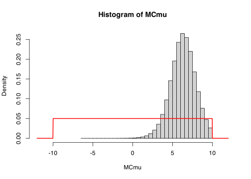
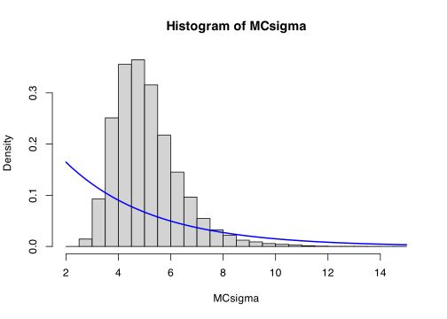

prior <- function(mu, sigma) dunif(mu, -10, 10) * dexp(sigma, 0.3)
accept <- function(mu, sigma, propmu, propsigma, x) {
if (propsigma < 0) return(0) else {
priorratio <- prior(propmu, propsigma) / prior(mu, sigma)
lhr <- dnorm(x, propmu, propsigma) / dnorm(x, mu, sigma)
return(priorratio * prod(lhr))
}
}
x <- c(3.5, 13.7, 6.4, 0.7, 10.2, -2.3, 6.6, 5.1, 9.1, 10.7)
n <- 1e6
stepmu <- 4
stepsigma <- 2
initialmu <- 0
initialsigma <- 3
MCmu <- rep(0, n)
MCsigma <- rep(0, n)
MCmu[1] <- initialmu
MCsigma[1] <- initialsigma
for (i in 1:(n - 1)) {
propmu <- MCmu[i] + rnorm(1, 0, stepmu)
propsigma <- MCsigma[i] + rnorm(1, 0, stepsigma)
if (runif(1) < accept(MCmu[i], MCsigma[i], propmu, propsigma, x)) {
MCmu[i + 1] <- propmu
MCsigma[i + 1] <- propsigma
} else {
MCmu[i + 1] <- MCmu[i]
MCsigma[i + 1] <- MCsigma[i]
}
}\[ \newcommand{\Exg}{\operatorname{\mathbb{E}}} \newcommand{\Ex}{\mathbb{E}} \newcommand{\Ind}{\mathbb{I}} \newcommand{\Var}{\operatorname{Var}} \newcommand{\Cov}{\operatorname{Cov}} \newcommand{\Corr}{\operatorname{Corr}} \newcommand{\ee}{\mathrm{e}} \]
23 MCMC and Bayesian statistics
23.1 Bayesian set-up
Today, we will complete our study of Markov chain Monte Carlo by taking a look at how MCMC can be applied to Bayesian statistics.
We recall the Bayesian set-up. The data is modelled by the likelihood \(f(\mathbf x \mid \theta)\), which is the distribution (probability mass or density function) of the data \(\mathbf x = (x_1, x_2, \dots, x_n)\) given some unknown parameter \(\theta\). Typically, the datapoints \(x_i\) are assumed to be IID, so we can write \[ f(\mathbf x \mid \theta) = \prod_{i=1}^n f(x_i \mid \theta) . \]
Our goal in statistics is to make inferences about – that is, to learn about – the unknown parameter \(\theta\).
In the Bayesian paradigm, we start with a prior belief about what we think the likely values of \(\theta\) are before we’ve collected any data. Our prior belief is represented by a distribution \(\pi(\theta)\).
After collecting the data \(\mathbf x\), we then seek the posterior distribution – that is, the distribution of \(\theta\) conditional on the data we have seen. This is represented by a distribution \(\pi(\theta \mid \mathbf x)\). It is this posterior distribution that we want to learn about.
We can calculate the posterior from the prior and the likelihood using Bayes’ theorem. We have \[ \pi(\theta \mid \mathbf x) \propto \pi(\theta) \,f(\mathbf x \mid \theta) = \pi(\theta) \prod_{i=1}^n f(x_i \mid \theta) . \] More informally, we can say \[ \text{posterior} \propto \text{prior} \times \text{likelihood} . \] Let us note for future reference that this only gives the posterior \[ \pi(\theta \mid \mathbf x) = \frac{1}{Z}\, \pi(\theta) \,f(\mathbf x \mid \theta) = \frac{1}{Z}\, \pi(\theta) \prod_{i=1}^n f(x_i \mid \theta) \] up to proportionality, where the normalising constant is \[ Z = \int \pi(\theta)\,f(\mathbf x \mid \theta) \, \mathrm{d}\theta . \]
If you have seen Bayesian statistics in previous modules, you may well have seen simple cases, where the posterior turns out to have a simple form – often in the same family as the prior but with a different parameter.
For example, take the case where the likelihood \(X \sim \operatorname{Bin}(m, \theta)\) is a binomial distribution with a known number of trials \(m\) but an unknown success probability. If the prior for \(\theta\) is a Beta distribution, then it’s easy to check that the posterior for \(\theta\) is another Beta distribution, just with different parameters.
But aside from these simple “toy examples”, in real life the posterior distribution often has a complicated form. It is often not possible to calculate the normalising constant \(Z\); nor, therefore, can we calculate statistics of the posterior, like its expectation or confidence intervals.
This is where statistical computing comes in. If we can manage to sample from the posterior distribution, then we can estimate statistics of the posterior using Monte Carlo estimation. But (again, aside from the easy toy examples), sampling from the posterior seems hard. The inverse transform method requires the normalisation constant \(Z\), but that is typically to difficult to calculate. Occasionally, if we’re very clever, we can think for a long time and manage to come up with an envelope rejection sampling method. But we’d like a method we know will always work.
MCMC is that method. If we use the random walk Metropolis algorithm, all we need to do is pick our step size \(\sigma\) and set it going.
A crucial point that we haven’t mentioned yet, is that Metropolis–Hastings works perfectly fine when we don’t know a normalising constant in the distribution we are sampling from. That’s because the acceptance probability – let’s just write it for the symmetric Metropolis case – \[\begin{align} \alpha(\theta, \theta') &= \min \left\{ \frac{\pi(\theta' \mid \mathbf x)}{\pi(\theta \mid \mathbf x)} , \, 1 \right\} \\ &= \min \left\{ \frac{\frac{1}{Z}\,\pi(\theta')\,f(\mathbf x \mid \theta')}{\frac{1}{Z}\,\pi(\theta')\,f(\mathbf x \mid \theta)} , \, 1 \right\} \\ &= \min \left\{ \frac{\pi(\theta')}{\pi(\theta)}\,\frac{f(\mathbf x \mid \theta')}{f(\mathbf x \mid \theta)} , \, 1 \right\} , \end{align}\] where the \(Z\)s in the fraction have cancelled out.
23.2 Example
Example 23.1 Consider a statistical model where \(X_i\) are IID and normally distributed with unknown mean \(\mu\) and and standard deviation \(\sigma\). Here our parameter \(\boldsymbol\theta = (\mu, \sigma)\) is two-dimensional. So the likelihood is \[ f(\mathbf x \mid \mu, \sigma) = \prod_{i=1}^n \frac{1}{\sqrt{2\pi\sigma^2}}\,\exp \left(-\frac{(x_i-\mu)^2}{2\sigma^2}\right) = (2\pi\sigma^2)^{-n/2} \,\exp \left( -\frac{1}{2\sigma^2} \sum_{i=1}^n (x_i - \mu)^2 \right) . \]
There are some special priors for which the posterior here has a very simple distribution. For example, if the prior for \(\mu\) is a normal distribution and the prior for \(\sigma\) is that \(1/\sigma^2\) has a Gamma distribution and these are independent, then the posterior has the same form but with different parameters. But if your beliefs about \(\mu\) and \(\sigma\) aren’t well represented by a distribution of this form, then it will be very difficult or impossible to get a closed-form expression for the posterior.
Let’s suppose our prior beliefs are represented something a bit weirder. Let’s say that our prior is that \(\mu\) is uniformly distributed on \([-10, 10]\) and that \(\sigma\) is exponentially distributed with rate \(0.3\) and that these are independent. So our prior is \[\pi(\mu, \sigma) = \frac{1}{20}\,0.3\mathrm{e}^{-0.3\sigma} \qquad -10 \leq \mu \leq 10, \sigma \geq 0 . \]
Suppose now that we see that data \[\mathbf x = (3.5, 13.7, 6.4, 0.7, 10.2, -2.3, 6.6, 5.1, 9.1, 10.7) . \] We want to update our beliefs about \(\mu\) and \(\sigma\) and make inferences about the posterior. Finding the posterior here “by hand” seems a hopeless task. But we can certainly simulate from it with the random walk Metropolis algorithm.
If we just want “point estimators” for \(\mu\) and \(\sigma\), we could just take the means of the posteriors distributions. We can calculate those using MCMC; they’re simply
c(mean(MCmu), mean(MCsigma))[1] 6.286321 5.092001Compare these to the posterior means of \(0\) and \(1/0.3 = 3.33\) respectively.
But the strength of Bayesian statistics is not just computing point estimates, but understanding the entire posterior distribution. We can compare our histograms of the marginal distributions of the posterior with the marginal distributions of the prior.
hist(MCmu, probability = TRUE, xlim = c(-12, 12), breaks = 50)
curve(dunif(x, -10, 10), add = TRUE, n = 1001, lwd = 2, col = "red")
hist(MCsigma, probability = TRUE, breaks = 80, xlim = c(0,12))
curve(dexp(x, 0.3), add = TRUE, n = 1001, lwd = 2, col = "blue")
Although in our prior the parameters \(\mu\) and \(\sigma\) were independent, that might not be the case any longer in our posterior.
cor(MCmu, MCsigma)[1] -0.08209921It appears there’s now a slight negative correlation (if \(\mu\) is smaller than we expect, \(\sigma\) has to be a little bit bigger to allow the data to fit).
23.3 Numerical stability
I didn’t get to the subsection in the lecture, so let’s say that this subsection is non-examinable.
In our example, we had only 10 data points. But when you have a large number of data points \(n\) (as is often the case in modern “big data” applications), then \(f(\mathbf x \mid \theta) = \prod_{i=1}^n f(\mathbf x \mid \theta)\) can be extremely small. This can prove difficult when calculating the acceptance probability, because both the numerator and denominator in \[ \frac{\pi(\theta')\, f(\mathbf x \mid \theta')}{\pi(\theta)\, f(\mathbf x \mid \theta)} = \frac{\pi(\theta')\prod_{i=1}^n f(x_i \mid \theta')}{\pi(\theta)\prod_{i=1}^n f(x_i \mid \theta)} \] can be extremely small. Dividing one very small number by another can be “numerically unstable”, where small rounding errors can lead to big errors.
It’s usually a good idea to split the fraction into multiple fractions each of which has a more sensible size; that is \[ \frac{\pi(\theta')}{\pi(\theta)} \times \frac{f(\mathbf x \mid \theta')}{f(\mathbf x \mid \theta)} = \frac{\pi(\theta')}{\pi(\theta)} \times \prod_{i=1}^n \frac{f(x_i \mid \theta')}{f(x_i \mid \theta)} . \]
Even more reliable can be to work on a log scale. We know that \(a \times b\) can also be written as \(\exp(\log a + \log b)\). So it can be even better to write the fraction above as \[\begin{multline} \exp \big(\log \pi(\theta') - \log \pi(\theta) + \log f(\mathbf x \mid \theta') - \log f(\mathbf x \mid \theta) \big) \\ = \exp \bigg(\log \pi(\theta') - \log \pi(\theta) + \sum_{i=1}^n \log f(x_i \mid \theta') - \sum_{i=1}^n \log f(x_i \mid \theta) \bigg) . \end{multline}\]
23.4 MCMC conclusions
In the second part of this module, we saw various ways to get exact IID samples from the exact distribution we want (in-built R functions, inverse transform method, Box–Muller transform, basic rejection sampling, envelope rejection sampling). In this third part of the module, we’ve only really seen one way in detail – the random walk Metropolis algorithm – and it produces non-independent samples from approximately the distribution we want. That description makes MCMC sound much worse!
But MCMC using the random walk Metropolis algorithm has big advantages too. todo